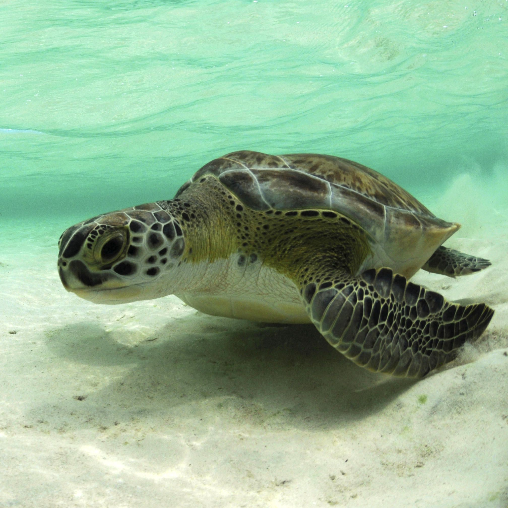

Most Famous Turtle Species

GREEN TURTLE

OLIVE RIDLEY TURTLE

The order Testudines has 356 species of turtles that are currently recognized.
The largest family, the Geoemydidae, which has more than 80 species,
is one of the 14 families into which these species are split.
Oceans, rivers, lakes, wetlands, and even deserts are just a few of the diverse settings where turtles can be found.
| Turtle Categories | Image of Turtle | Famous place for visit | best days for visit |
|---|---|---|---|
| Green Turtle |  | Rekawa beach | May-August |
| Olive Ridley Turtle |

|
Rekawa beach | October-January |
| Loggerhead Turtle |

|
East Cost of Sri Lanka | November-April |